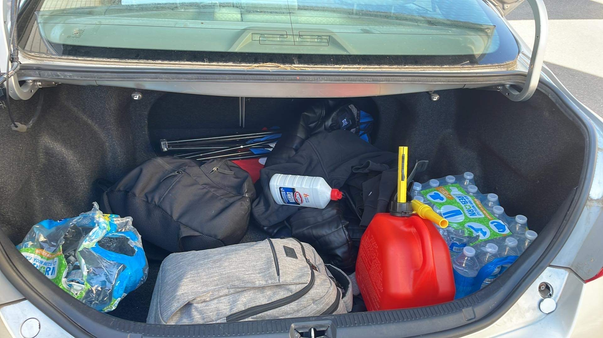
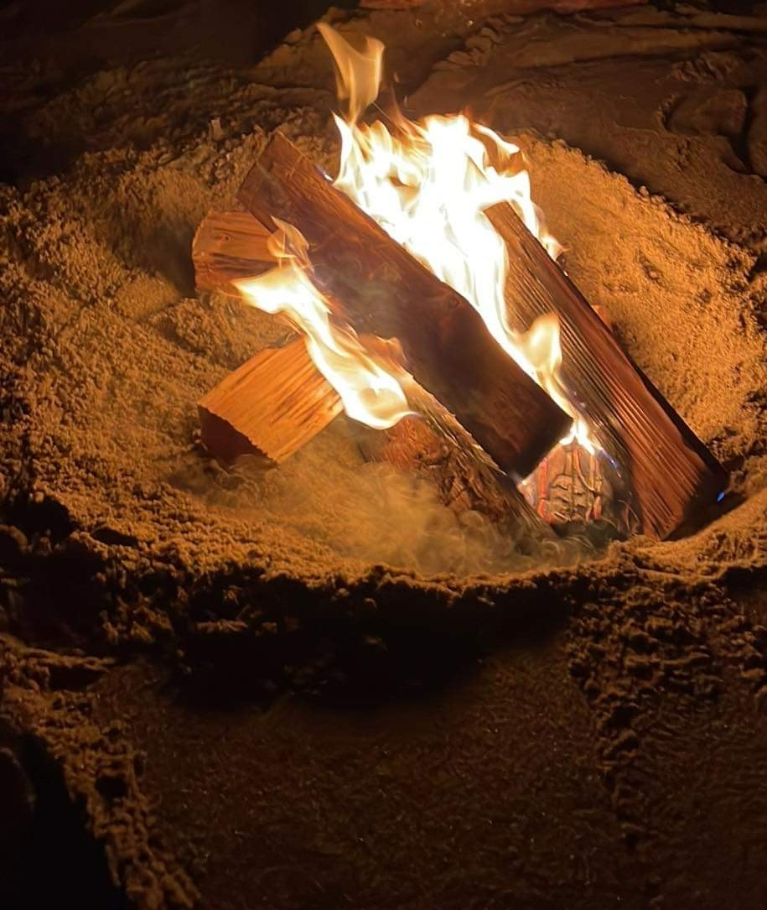
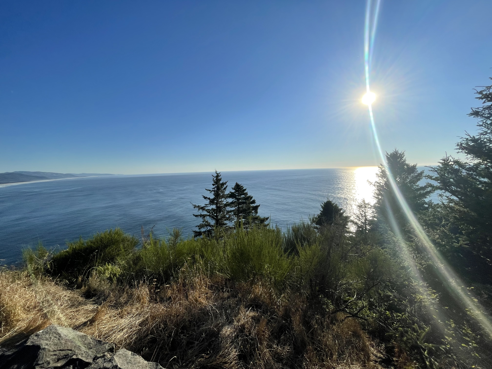
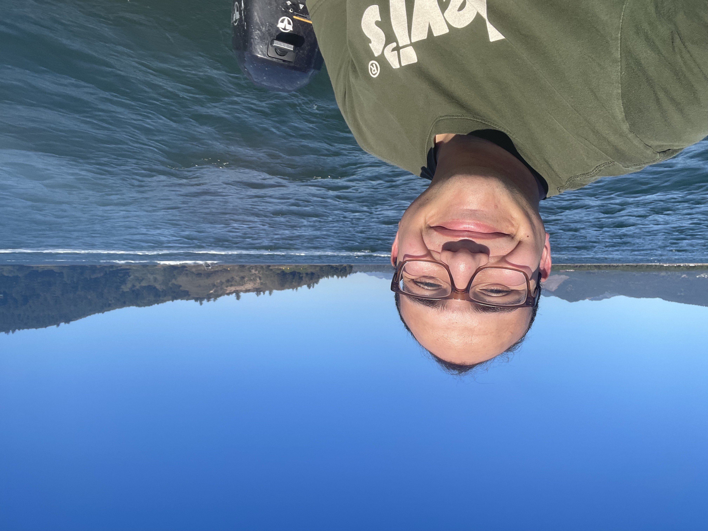

 my birthday this year I decided to take a solo roadtrip along the coast of Oregon. I had been busy over the past 2 months or so with a huge workload as it is the busy season at work(School wasn't helping either). I decided to take the weekend off my job and pack up my car and head west towards the coast(of course that was after finishing my classes for the day -_-). But hey, eventually I got there. Packed everything into my car and I set off blasting my favourite music and trying to figure out things to do on my trip as I had nothing planned.

Day 1:
I set out. On my drive I had to stop by one of my favourite food place THE TACO BELL as I hadn't eaten all day by this point at it was already 1:00pm. After a quick snack from the bell I went on and made it to the beautiful city of newport where I had always wanted to visit the aquarium there. Let me tell you its worth the visit. I had so much fun looking at all the wildlife from puffins to seals otters and sharks! My favourite section of all was the underwater tunner where you walk through a glass tunnel surrounded by amazing fish. You pass through 3 different sections each containing unique fish and other critters. I stopped by a place and grabed a quick snack and headed towards lincoln city for the night as I was able to get a cheap room there. I was too happy to fall asleep so I headed over to the beach and lit a fire and roasted some sausages on the flame as I listened to the sound of the waves... I also met some other night beach goers and had a nice chat with them.
And that concludes day 1

Day 2:
For day 2 I decided to drive up north towards washington. I began my treck at 11:00am(I slept in due to the night before). I had a lot of fun along the road there where many bypasses which showed a bautiful view of the coast. I had to stop at one viewpoint in particular as I found it absolutely stunning. Along the drive I saw a place that had boat rentals and crabbing so I decided to stop by(And boy im glad I did!). I wasn't to hungry so I decided to see if I could rend a boat. Being that I am 19 and have no licenses for boating whatsover. Surprisingly all they needed was money and I was able to finish one of my life goals of driving a boat. I drove around for a few hours and docked with other boats and had a lot of fun just riding around It taking in the beauty of nature. My time ran out and I headed towards the docks and saw that they were making some fresh live dungenous crab,clams and oysters from the days catch. I of course had to try everything out and they gave me free oysters. The food was absolutely amazing, best crab and seafood I have ever had and the people working there where just the sweetest and nicest people ever. Will definetly hed back over there to go crabbing with my dad some day. After getting done there I ended up driving to washington and headed east towards the i-5 and got myself a room in Kelso,WA. Next day I had breakfast and drove home...
And with that my little escape was over....